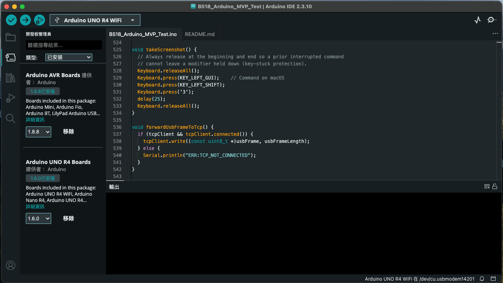
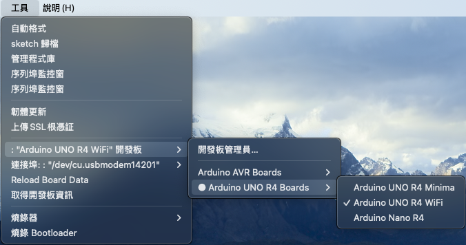
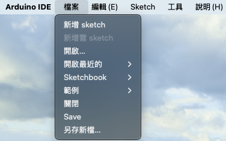
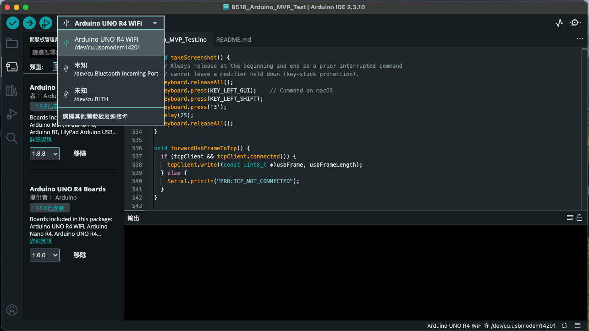
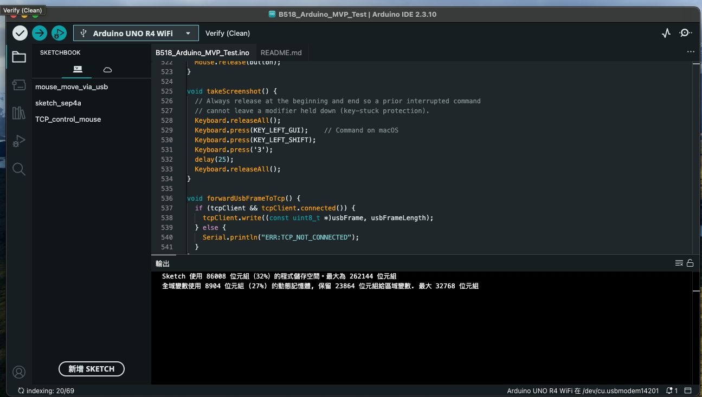
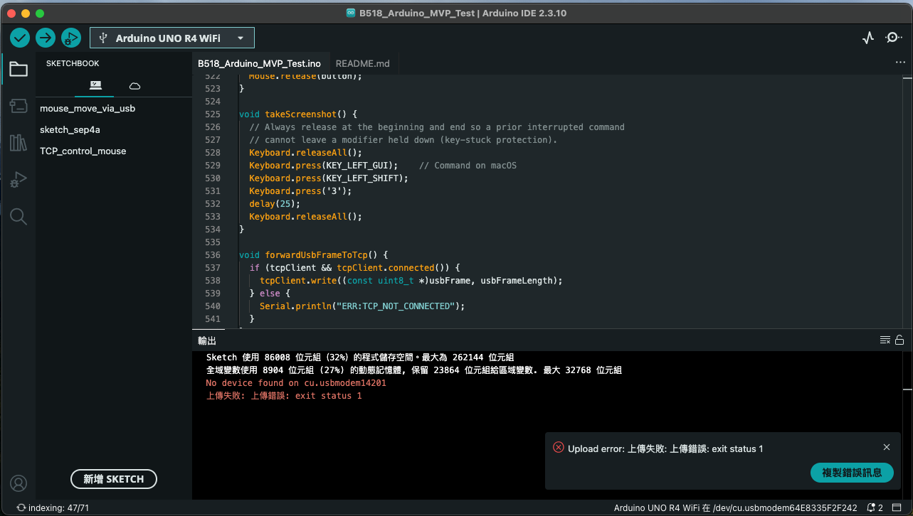
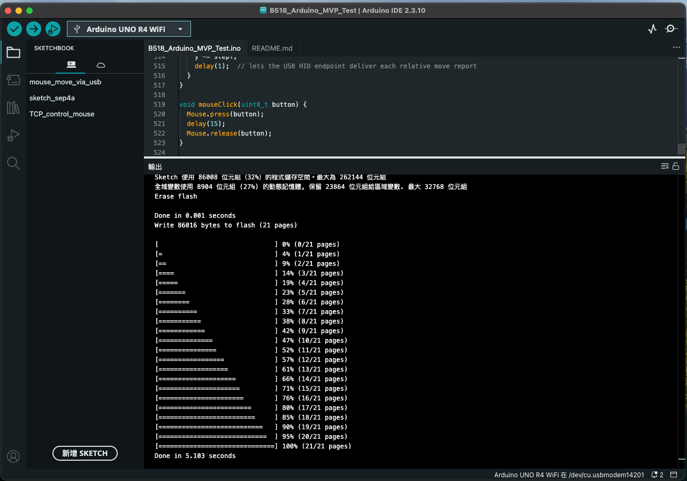

1. 準備項目
開始前確認硬體與檔案齊全。USB 線必須支援資料傳輸，只有充電功能的線無法燒錄。
硬體
- Arduino UNO R4 WiFi
- W5100 Ethernet Shield／模組
- USB-C 資料線
- 可連線的 Mac 或 Windows 電腦
- 測試用 Ethernet switch 與網路線
專案檔案
請確認下列資料夾與主程式檔同名並保持在一起：
B518_Arduino_MVP_Test/
└── B518_Arduino_MVP_Test.ino2. 安裝官方 Arduino IDE
從 Arduino 官方 Software 頁面下載最新版 Arduino IDE 2。不要使用來路不明的安裝包。
Windows 10／11
- 下載 Windows 64-bit 安裝程式。
- 雙擊下載的
.exe。 - 依安裝精靈完成安裝；若詢問驅動程式，允許安裝。
- 從開始功能表開啟 Arduino IDE。
macOS
- 依 Mac CPU 下載相符的
.dmg。 - 雙擊 DMG，將 Arduino IDE 拖到 Applications。
- 從「應用程式」或 Spotlight 開啟。
- 若 macOS 首次詢問是否開啟下載 App，確認來源為 Arduino 後允許。
3. 安裝 UNO R4 板卡與函式庫
開啟 Boards Manager
點左側「Boards Manager」圖示，或選單 Tools → Board → Boards Manager…。

安裝 UNO R4 board package
搜尋 UNO R4，找到 Arduino 官方的 Arduino UNO R4 Boards 並按 Install。部分較舊介面可能顯示平台家族名稱 Arduino Renesas UNO。
從 Tools 選單找到目標板型
開啟 Tools → Board → Arduino UNO R4 Boards，清單中可以找到 Arduino UNO R4 Minima 與 Arduino UNO R4 WiFi。請依實際硬體型號選擇；本專案目前 B518 Demo 與下方實機截圖使用的是 UNO R4 WiFi。

確認 Ethernet 函式庫
開啟 Library Manager，搜尋 Ethernet，確認已安裝 Arduino 官方 Ethernet library。SPI、EEPROM、Keyboard、Mouse 與 HID 由板卡核心提供。
4. 載入本專案 Arduino 程式
從 File 選單開啟 sketch
選擇 File → Open…，再開啟：
B518 ATE MVP Demo/B518_Arduino_MVP_Test/B518_Arduino_MVP_Test.ino
.ino 韌體檔。確認網路參數
程式最上方預設如下。量產板可先保留預設 IP，燒錄後再由 Atlas Agent 的「修改 IP」設定唯一位址。
DEFAULT_IP = 192.168.1.100
TCP_LISTEN_PORT = 5000
W5100_CS_PIN = 10
SD_CS_PIN = 4接上硬體
將 W5100 Shield 正確疊接在 UNO R4 WiFi，USB-C 接到燒錄電腦。初次配置多片 Arduino 時，先不要把所有預設 IP 相同的板子一起接到 switch。
選擇 Board 與 Port
點 IDE 上方 Board Selector，選擇與實際硬體相同的 Arduino UNO R4 WiFi 或 Arduino UNO R4 Minima，再選擇新出現的 USB port。無法分辨時，拔掉 USB 觀察哪個 port 消失，再重新插入。

/dev/cu.usbmodem14201。5. 編譯程式
- 按 IDE 左上角的 Verify ✓ 按鈕。
- 等待下方 Output 完成編譯。
- 看到類似
Sketch uses ... bytes，且沒有紅色 error，即代表編譯成功。

Compilation error，並顯示程式與記憶體使用量。6. 燒錄程式
關閉占用 serial port 的程式
關閉 Atlas Agent、Serial Monitor 與其他序列工具，避免 USB CDC port 被占用。
按 Upload →
確認 Board 和 Port 正確後，按 IDE 左上角、Verify 右側的 Upload 右箭頭。IDE 會先編譯，再寫入 UNO R4。
燒錄失敗時重新選擇 Board／Port
若 Output 顯示 No device found on ... 或 Upload error: exit status 1，常見原因是重新插拔 USB 後 COM／USB port 已變更。回到上一節的 Board Selector，重新選擇目前出現的 UNO R4 與新 port，再按 Upload。

等待燒錄完成
燒錄期間不要拔 USB。Output 會顯示 erase、write 與進度；進度到 100%，且沒有紅色錯誤或失敗通知，才算燒錄成功。

關閉 Serial Monitor
若要改用 Atlas Agent，務必先關閉 Arduino IDE 的 Serial Monitor，否則 Agent 可能無法連線相同 USB CDC。
7. 燒錄後確認
建議直接用 Atlas Agent 驗證，因為它會以正式的 115200 baud 開啟 Arduino。
- 關閉 Arduino IDE Serial Monitor。
- 開啟 Atlas Agent B518 ATE.app。
- 按「重新掃描」，選擇
/dev/cu.usbmodem…。 - 按「連線」。Agent 會自動送出
GET_IP。 - 確認畫面顯示 Arduino IP，而非「查詢中」或錯誤訊息。
預期通訊紀錄：
USB CDC 已連線；自動查詢 Arduino IP
TX: GET_IP
RX: IP:192.168.1.1008. 常見異常
| 現象 | 原因 | 處理方式 |
|---|---|---|
| 找不到 UNO R4 WiFi | 板卡套件未安裝或 USB 線只能充電 | 安裝 Arduino UNO R4 Boards；更換確認可傳資料的 USB-C 線。 |
Ethernet.h: No such file | Ethernet library 未安裝 | Library Manager 搜尋 Ethernet，安裝 Arduino 官方版本。 |
| Upload port busy／無法開啟 port | Agent 或 Serial Monitor 正占用 CDC | 關閉其他程式與 Serial Monitor，再重新選 Port。 |
No device found on ...／exit status 1 | USB 重新插拔後 COM／USB port 已改變，IDE 仍保留舊 port | 重新開啟 Board Selector，選擇目前的 UNO R4 與新 port，再按 Upload。 |
| 燒錄卡住或板子無法辨識 | 原 sketch 影響 USB 或 bootloader 未進入 | 快速按兩下 RST 進 bootloader，再選擇新出現的 port 重燒。 |
| Agent 連線但沒有 IP | 選錯 USB port、舊韌體或序列埠被占用 | 重新掃描；確認燒錄的是整合韌體；關閉 IDE Serial Monitor。 |
| Ethernet 無法連線 | IP 網段錯誤、IP 衝突或 W5100 接線／CS 錯誤 | 確認 PC 同網段、每板 IP 唯一、CS=D10、SD CS=D4 被停用。 |
9. FAE 交接檢核
- Arduino IDE 使用官方 IDE 2，UNO R4 board package 已安裝。
- 開啟的是
B518_Arduino_MVP_Test.ino，不是僅 TCP bridge 的舊程式。 - Board 為 Arduino UNO R4 WiFi，Port 與實際 USB 對應。
- Verify 與 Upload 均成功。
- Serial Monitor 已關閉。
- Atlas Agent 可連線並自動讀到 Arduino IP。
- 同一網段的每片 Arduino IP 均唯一。